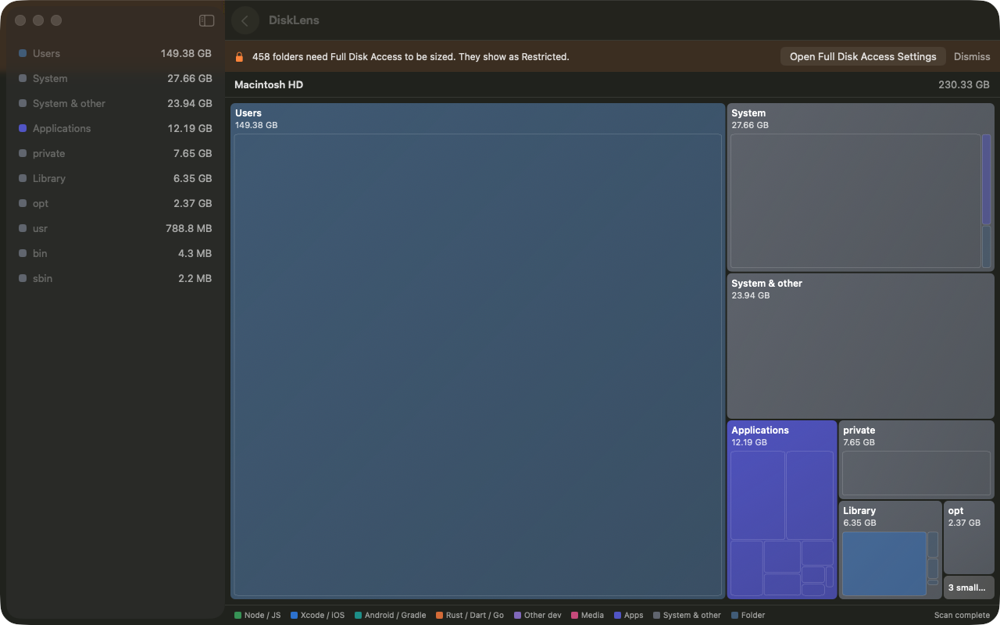
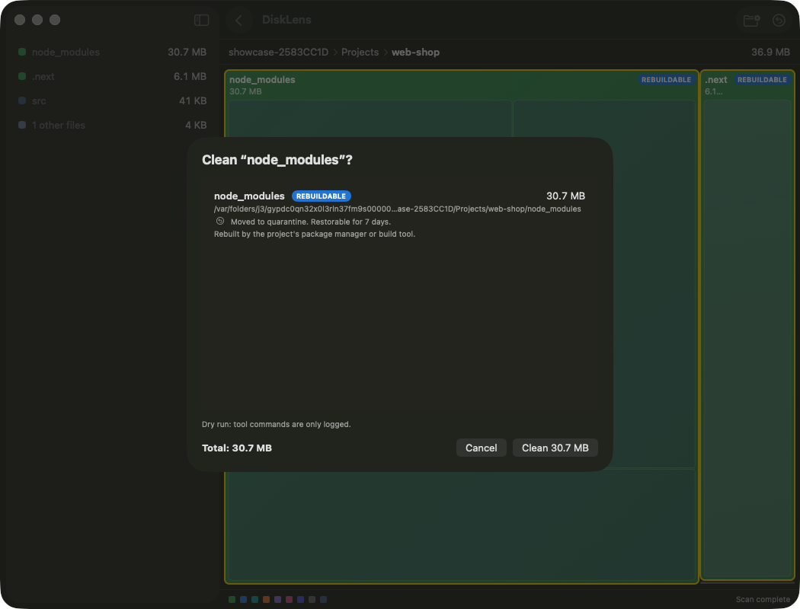
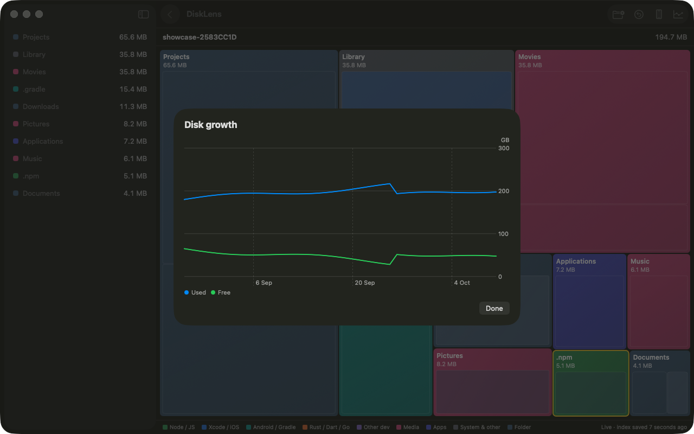

See what eats your disk.
Clean it without fear.
DiskLens maps your whole Mac as a zoomable treemap and clears Xcode, node_modules, Docker and mobile-dev junk — with an undo window.
Download for macOSmacOS 14+ · Apple Silicon & Intel · auto-updates via Sparkle

Fast treemap
First boxes in under a second. Full 1.8M-file scan in about 12 s, then live updates from FSEvents.
Safe by design
No root. Source files are never touched. Cleaned items go to a quarantine you can restore from.
Built for developers
DerivedData, simulators, node_modules, Gradle, Pods, Docker, Cargo and more — each with its own rule.
Autopilot
Keep-free daemon and menu bar free-space readout for always-on build machines.
Confirm before anything goes

See what grew

Full Disk Access
To size protected folders, add DiskLens in System Settings → Privacy & Security → Full Disk Access, then relaunch. The app links you there when a delete fails for permission.